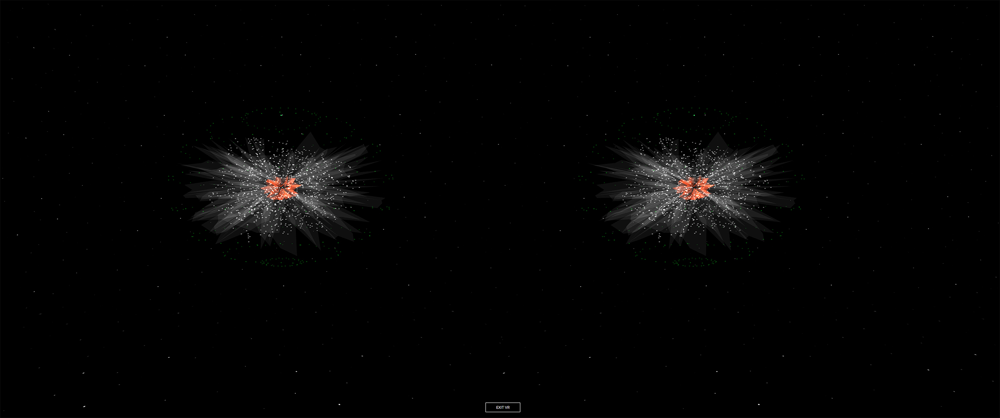
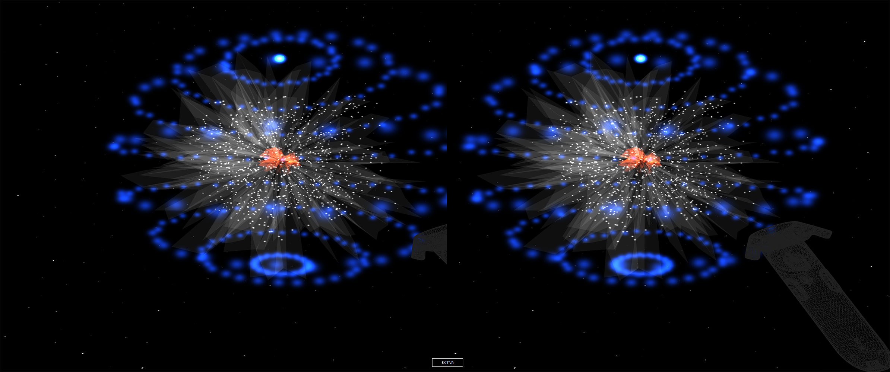
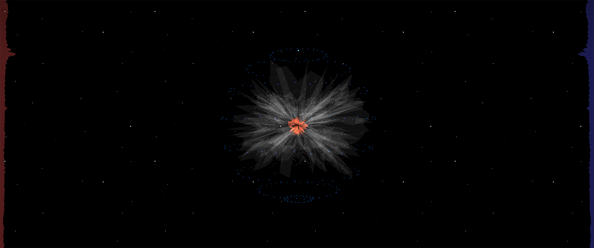

Illy a Primitive Intelligence
Yagiz Mungan
- 
- 
- 
Experience Now
Description
Illy is a semi-intelligent system powered by Web Audio API, WebGL, WebVR and sometimes Kinect. It understands what it is spoken to in a primitive way and responds to us in a primitive, emotional and simple way both sonically and visually. As opposed to the cutting edge AIs and interfaces like Siri, Cortana, OK Google, Illy does not understand natural language, defined commands or even language at all. It does not respond using fine-tuned intonations to deliver the information gathered from the cloud, it is not integrated with any services. Instead, as an antithesis, it only tries to understand the sonic properties of the spoken language like the attack, loudness, roughness and pitch. And responds sonically, in a non-language, musical, psychoacoustical way: without the symbolic sounds that we call language but with tonal sounds, timbre, frequency, consonance and rhythm. Visually, it shapes the visuals focusing on size, speed and color determined by its understanding and creating an abstract visual. Ignoring the symbolic data, like an infant, Illy tries to understand the emotion in the human voice - free from symbols of the language - and responds you with your emotions like sonic mirror to the soul. The aimed interactive experience brings questions about human sound and human-machine interface that we sometimes ignore in this age of information.
With WebVR, not only Illy can be accessible with a click but also Illy leaves the confines of 2D-screens and becomes ‘the ideal’ AI, floating around the space always open to conversing and not helping with any of our tasks including setting alarms, playing music or calling a cab. Instead, Illy gives us a naïve communication channel that we can establish with an infant or an animal.
Bio
Yagiz Mungan is an interdisciplinary developer/artist/scholar working with the concepts of interaction, VR/AR, games, web, mobile, algorithmic generation of audiovisual systems, sound, and interactive music. His recent individual works, which investigate the relationship between technology and our daily lives, have been shown in various venues and events in the Bay Area such as Soundwave Biennale, 3D Web Fest and CODAME. Yagiz is currently working at AKQA creating interactive experiences. He holds MFA in Electronic and Time-Based Art at Purdue University and MS in computer engineering from Chalmers University of Technology
Compatibility
| Chrome | Firefox | Safari | |
|---|---|---|---|
| Desktop | ✔ | ✔ | ✔ |
| Mobile | ✔ | ✔ | ✔ |
| Oculus | ✔ (Chromium) | ||
| Vive |
Note: You may need to do some special setup for your browser to work with a VR headset like the Oculus Rift or HTC Vive.